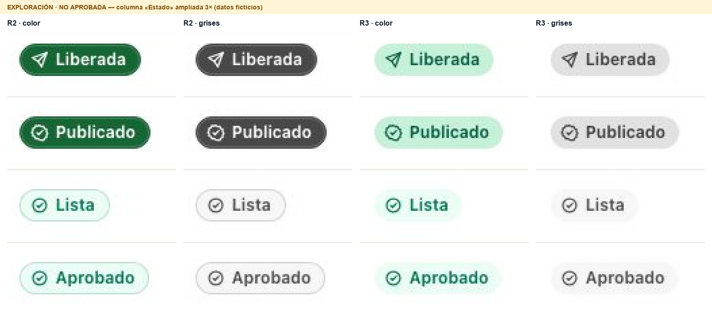

Experimento 01 · exploración de estados
Aprobado no es Publicado: cinco maneras de decirlo
R2 se distinguía por un relleno verde oscuro que rompía la familia; R3 recuperó la vivacidad, pero Aprobado y Publicado (y Lista y Liberada) vuelven a parecer el mismo estado. Aquí están R3 y cinco alternativas (V1–V5, más la recomendada V2+) en contexto real, a tamaño 1:1, con las mismas restricciones: píldora sin contorno, texto e icono, tono Céluma y contraste legible.
V2+ · Glifo lleno + contexto
- Una sola señal nueva, de forma: Publicado y Liberada conservan la píldora menta de R3 y dibujan su icono relleno (sello; disco con avión) en la tinta del estado. Aprobado y Lista siguen con icono de trazo. Sin relleno oscuro, sin contorno, sin cambiar un solo color de R3.
- Punto medio medido: la marca local del chip (zona de 12 × 12 px más oscura, en gris) difiere 91 entre Aprobado y Publicado: R3 24, R2 113. El chip completo solo cambia 24,5 de gris medio (R2: 118,9). Es decir, casi toda la distinción de R2 con una quinta parte de su peso.
- Se distingue sin color (escala de grises, deuteranopía y protanopía simuladas), donde R3 y V4 no lo logran.
- «sin firmar» fuera del chip y solo en tablas sin «Qué sigue»; en listas y fichas ya lo dicen «Firmar y publicar» y «Ahora». Dentro del chip lo alarga de 95 a 161 px.
- La decisión no es un chip: «Revisora Ejemplo · Aprobó» va junto a la persona; el chip es siempre el estado del informe.
Compromiso. Frente a R2: menos contundente a distancia, pero conserva la familia menta. Frente a R3: añade una marca que se ve antes de leer. Si en monitores del laboratorio se queda corta, V5 sube el fondo a #a9e5c5 sin cambiar la regla.
Todas las variantes, pares críticos a tamaño real
Mancha: diferencia (0–255, en gris) de la zona de 12 × 12 px más oscura de cada chip; es lo que el ojo detecta antes de leer. Gris chip: diferencia del gris medio de todo el chip. Fondos y ΔE deut.: diferencia solo del color de fondo. Verde = fuerte · ámbar = débil · rojo = insuficiente. Las métricas de píxeles vienen de scripts/measure.py sobre recortes a 3×; las de fondo se calculan en vivo.
¿«sin firmar» dentro o fuera del chip?
| Criterio | Dentro (V3) | Fuera, solo en tablas sin «Qué sigue» (V2+) |
|---|---|---|
| Largo | 95 → 161 px (+70 %). En la tabla densa la columna pasa de 128 a 187 px, el marco de 1:1 necesita 37 px de desplazamiento y el texto se corta («sin firm…»). | Chip igual (95 px). Columna de 138 px; «sin firmar» cae a una segunda línea discreta solo en las filas aprobadas. |
| Redundancia | Repite «Firmar y publicar» (lista) y «Falta firmar y publicar» (ficha). | Aparece solo donde no hay otra pista. |
| Alcance entre dominios | Solo sirve a Aprobado: no hay calificador honesto para Lista ni Liberada. | La distinción transversal la da el glifo; el texto es un refuerzo local. |
| Vocabulario | Cambia la etiqueta del producto («Aprobado»). | Conserva la etiqueta; el calificador es texto de contexto. |
| Redacción | «sin firmar» nombra una carencia y puede leerse como anomalía; «por firmar» nombra el paso pendiente con la misma longitud. Queda como decisión de vocabulario pendiente. | |
Láminas 1:1 para revisar fuera de la página
Todas a tamaño real (1 px CSS = 1 px), en color y en escala de grises: tabla · tabla en gris · lista de trabajo · en gris · ficha · en gris · móvil a 390 px real · en gris.


Diagnóstico: qué señal se perdió entre R2 y R3

| Señal | R2 | R3 | Lectura |
|---|---|---|---|
| Polaridad (texto claro sobre fondo oscuro) | Sí | Perdida | Era la señal preatentiva: se nota antes de leer. Es también lo que se percibió como pesado. |
| Contraste entre fondos | 6,77:1 · ΔL* 60,6 | 1,18:1 · ΔL* 6,5 | Dos mentas casi iguales; en escala de grises Publicado es un gris muy claro. |
| Diferencia con deuteranopía (ΔE) | 63,8 | 8,2 | Por debajo de ~10 la diferencia en un área de 24 px apenas se percibe. |
| Contorno | Solo en los no entregados | Ninguno | R2 lo usaba en todos menos en el sólido: era ruido y señal a la vez. |
| Icono | Sello ≠ check | Sello ≠ check, ambos de trazo | A 14 px, el sello de trazo solo difiere del círculo por su borde dentado. |
| Texto | Sí | Sí | «Aprobado» y «Publicado» tienen la misma longitud y terminación: exigen leer. |
| Contexto («Qué sigue», «Ahora») | Sí | Sí | Presente en lista y ficha; falta en tablas densas sin esa columna. |
| Contraste de texto | 5,21 / 7,13:1 | 5,21 / 6,25:1 | Nunca fue el problema. |
Verificación calculada en esta página
Se renderizan los cuatro contextos de cada variante fuera de pantalla y se miden los colores aplicados. El script scripts/verify-estados.mjs repite estas mediciones con Chromium a 1440 y 390 px y guarda capturas.
«Mismo tono = mismo tratamiento» comprueba que dos estados con el mismo significado (p. ej. Publicado y Liberada) tengan fondo, tinta y tipo de glifo idénticos en órdenes, muestras e informes.